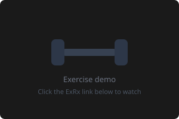

Barbell Back Squat

Muscles🟢 Quads · 🟢 Glutes · 🔵 Hamstrings · 🔵 Core
Descend below parallel (hip crease below knee). Chest stays up, brace your core like you’re about to get punched. Drive through your heels on the way up. 3-second eccentric down. The king of mass builders — no substitute drives leg growth like the squat.
Equipment not available? See alternatives
Goblet SquatDumbbell or kettlebell held at chest. Great for form. 4×10-12.
Hack Squat MachineQuad-dominant, similar ROM. Same sets/reps.
Safety Bar SquatIf regular bar is uncomfortable. Same movement. Same sets/reps.